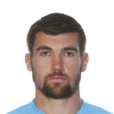

AUSTRALIA
Conocidos como los Socceroos(término que mezcla los palabras en inglés, soccer y kangaroo, que en español sería algo como "los canguros del fútbol"), Australia ha participado en cuatro Copas Mundiales: en 1974 y 2006, ambas realizadas en Alemania, 2010 en Sudáfrica y 2014 en Brasil.

Cahill

Rogić

Milligan
Kruse

Mooy
Leckie
Jurman
Behich
Sainsbury

Degenek

Ryan
Angelos Postecoglou, más conocido simplemente como Ange Postecoglou, es un exfutbolista greco-australiano y el actual entrenador de la selección nacional de fútbol de Australia. Es el entrenador más exitoso del fútbol australiano, habiendo ganado dos títulos de liga, cuatro copas y un torneo continental.